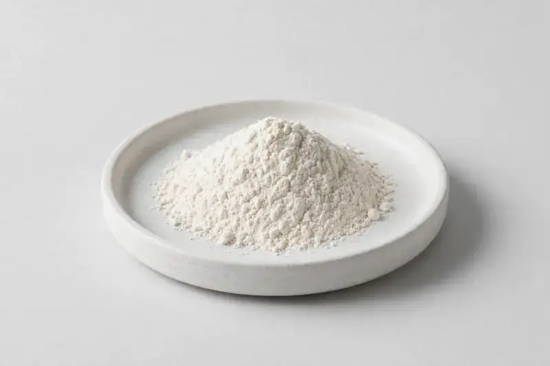

Phaseolus vulgaris seed extract standardized on phaseolamin — a widely traded botanical for carbohydrate-focused weight-management formulations.

Overview
White kidney bean extract is produced from the seed of Phaseolus vulgaris and standardized on phaseolamin, the protein fraction most buyers reference. It is a common ingredient in carbohydrate-focused weight-management capsule and powder concepts. As a Xi'an-based trading company sourcing through vetted partner producers, we match your target phaseolamin level and assay method to producer capability and confirm documentation honestly before quoting.
Specifications below reflect commonly requested options in the market — not a stock list. Share your target spec and we'll confirm exactly what we can supply, honestly.
| Specification | Details |
|---|---|
| Botanical identity | Phaseolus vulgaris seed extract powder |
| Source material | Seed |
| Marker compound | Phaseolamin — commonly requested: 1-2% |
| Appearance | White to off-white fine powder |
| Mesh size | Typically 80–100 mesh (confirm per inquiry) |
| Testing | COA/TDS arranged on request; scope agreed per your spec |
Applications
Documentation
We don't claim in-house labs or certifications we don't hold. COA and TDS documents can be arranged on request, and testing scope is agreed against your specification before supply.
FAQ
Related products
L-Citrulline
Key marker: 99%+
View specs →Bromelain (Ananas comosus)
Key marker: 2000-3000 GDU/g
View specs →Papain (Carica papaya)
Key marker: USP activity units
View specs →Morus alba
Key marker: DNJ 1%
View specs →Citrus aurantium
Key marker: Synephrine 6-10%
View specs →Send your target spec and volumes — we'll respond with a tailored quotation.
Request a Quote